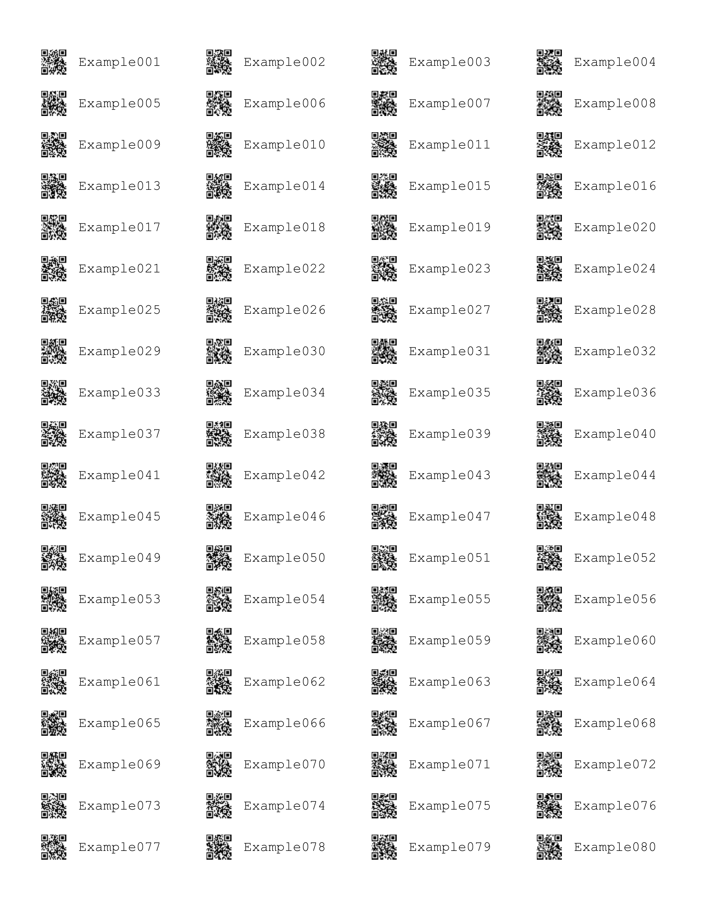
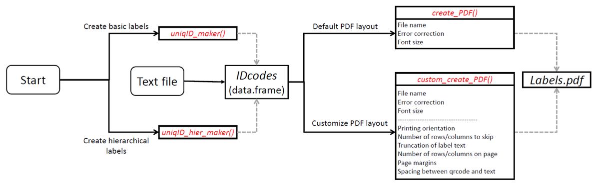

baRcodeR generates labels for more repeatable workflows with biological samples
Installation
You can install the released version of baRcodeR from CRAN with:
And the development version from GitHub with:
# install.packages("devtools")
devtools::install_github("ropensci/baRcodeR", build_vignettes = T)
# for windows users to build vignettes
# install_github("ropensci/baRcodeR", build_opts = c("--no-resave-data", "--no-manual"), build_vignettes = TRUE)NOTE: Restarting RStudio is necessary for the addin for baRcodeR to appear.
Quick Start
Text identifiers can be created in a sequential or hierarchical pattern.
## Loading required package: qrcode
## Registered S3 method overwritten by 'R.oo':
## method from
## throw.default R.methodsS3
example_labels <- uniqID_maker(user = FALSE, string = "Example", level = 1:80)
head(example_labels)## label ind_string ind_number
## 1 Example001 Example 001
## 2 Example002 Example 002
## 3 Example003 Example 003
## 4 Example004 Example 004
## 5 Example005 Example 005
## 6 Example006 Example 006Then the text identifiers can be printed out with a laser printer on sticker sheets.
pdf_file_name <- tempfile()
create_PDF(Labels = example_labels, name = pdf_file_name)
Th particular layout above defaults to ULINE 1.75" * 0.5" labels but other layouts can be specified through parameters in the custom_create_PDF function.
Introduction
baRcodeR is a R package for generating unique identifier strings and printable 2D (QR) barcodes, with the aim of improving repeatability of labelling, tracking and curating data from biological samples. Specifically, users can:
- generate simple ID codes (Ex001, Ex002, Ex003 …),
- generate hierarchical (i.e. nested) ID codes (A01-B01, A01-B02, A02-B01, A02-B02, A03-B01 …),
- generate printable PDF files of paired ID codes and QR barcodes with default spacing for ULINE 1.75" * 0.5" WEATHER RESISTANT LABEL for laser printer; item # S-19297 (uline.ca)
- customize the PDF layout for any type of printable format (e.g, vinyl stickers, waterproof paper)
- generate reproducible code for archival purposes (e.g. in publications or online repositories)
- create CSV files to link unique IDs and sampling hierarchy with downstream data collection workflows. For example, the PyTrackDat pipeline can be used to set up a web-based data collection platform: https://github.com/pytrackdat/pytrackdat
Creating unique, scannable barcodes generally involves two steps:
- Generate unique ID codes with
uniqID_maker()oruniqID_hier_maker() - Create a PDF file containing unique ID codes coupled with 2D barcode using
create_PDF()
If you already have ID codes saved in a CSV file, the csv can be read into a data.frame() in R. The label column, if it exists will be used as input to generate barcodes. Otherwise, the first column in the data frame will be used.
NOTE: When printing from pdf, ensure that ‘anti-aliasing’ or ‘smoothing’ options are turned OFF, and that you are not using ‘fit to page’ or similar options that will re-scale the output.

Cheat Sheet
A 2-page, quick-reference guide is available via Figshare
Usage from the console
Please load the vignette “Using-baRcodeR” for console use.
vignette("Using-baRcodeR")Contribution
Please note that the ‘baRcodeR’ project is released with a Contributor Code of Conduct. By contributing to this project, you agree to abide by its terms.
Please document issues with a description, a minimal reproducible example, and the sessionInfo().
## R version 3.6.1 (2019-07-05)
## Platform: x86_64-w64-mingw32/x64 (64-bit)
## Running under: Windows 10 x64 (build 17763)
##
## Matrix products: default
##
## locale:
## [1] LC_COLLATE=English_Canada.1252 LC_CTYPE=English_Canada.1252
## [3] LC_MONETARY=English_Canada.1252 LC_NUMERIC=C
## [5] LC_TIME=English_Canada.1252
##
## attached base packages:
## [1] stats graphics grDevices utils datasets methods base
##
## other attached packages:
## [1] baRcodeR_0.1.4 qrcode_0.1.1
##
## loaded via a namespace (and not attached):
## [1] Rcpp_1.0.3 png_0.1-7 digest_0.6.23 R.methodsS3_1.7.1
## [5] magrittr_1.5 evaluate_0.14 rlang_0.4.1 stringi_1.4.3
## [9] rstudioapi_0.10 R.oo_1.22.0 R.utils_2.9.0 rmarkdown_1.17
## [13] tools_3.6.1 stringr_1.4.0 xfun_0.11 yaml_2.2.0
## [17] compiler_3.6.1 htmltools_0.4.0 knitr_1.26See also:
zintr is an R interface to the C zint library. Use zintr if you want to create single barcode images. zintr does not include functions for (i) automating the creation of biologically-relevant, unique ID codes or (ii) customizable layouts for printing multiple barcodes.
zint is a C library that generates a variety of different barcodes. Just like zintr, zint produces single barcode images.